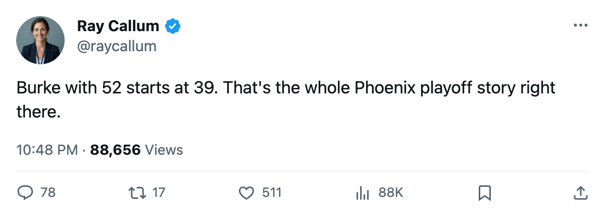

Notes from the West: Phoenix has won 7 straight and holds 8th by 3 points
This desk reported the blue line rebuild four wins ago. The streak is seven now.
 Ray CallumSenior correspondent · Home Ice Network
Ray CallumSenior correspondent · Home Ice Network
 Phoenix Coyotes has won 7 straight and holds the 8th playoff seat in the West by 3 points over
Phoenix Coyotes has won 7 straight and holds the 8th playoff seat in the West by 3 points over  Los Angeles Kings. The Coyotes have 68 points in 64 games. Los Angeles has 65 in 65.
Los Angeles Kings. The Coyotes have 68 points in 64 games. Los Angeles has 65 in 65.
This desk reported on February 26 that Phoenix had rebuilt its entire blue line, adding three defenders in a single overhaul. That piece ran when the streak stood at 4. It stands at 7 now. Over the last 10 games, Phoenix Coyotes has scored 29 and allowed 21. That plus-8 leads every club in the bottom half of the Western Conference.
 Sean Burke84 has started 52 of 64 games, an 81% share. He is 39. Nobody else on the Coyotes' depth chart has asked him to stop.
Sean Burke84 has started 52 of 64 games, an 81% share. He is 39. Nobody else on the Coyotes' depth chart has asked him to stop.
The problem for Phoenix: the season series against its nearest chaser. Phoenix Coyotes is 1 and 3 against Los Angeles Kings this season. Four meetings, one overtime win, three regulation losses. The club 3 points back has taken three of four.
Below them, the race is alive.  Columbus Blue Jackets sits 10th at 64 points in 65 games.
Columbus Blue Jackets sits 10th at 64 points in 65 games.  St. Louis Blues is 11th at 63 in 64, and this week added Christian Backman67 to the third defensive pair. Three clubs within 5 points of each other, 18 games to play.
St. Louis Blues is 11th at 63 in 64, and this week added Christian Backman67 to the third defensive pair. Three clubs within 5 points of each other, 18 games to play.
Phoenix visits  San Jose Sharks tomorrow, where it trails the season series 1-2-0. Then St. Louis Blues on March 8 and
San Jose Sharks tomorrow, where it trails the season series 1-2-0. Then St. Louis Blues on March 8 and  Colorado Avalanche on March 10. Three games in five nights against teams still fighting for position.
Colorado Avalanche on March 10. Three games in five nights against teams still fighting for position.
With 18 games left, Phoenix can reach 104 points. Nobody in the bottom three has won more than two straight.
